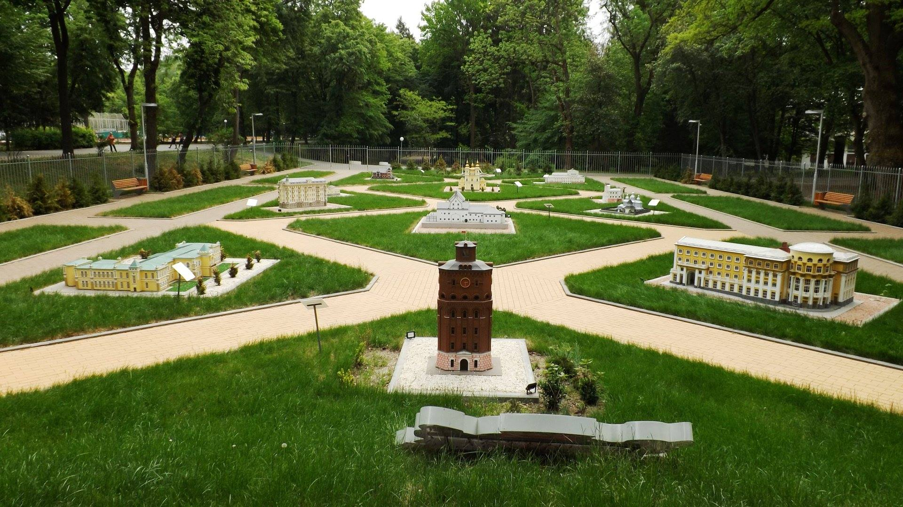
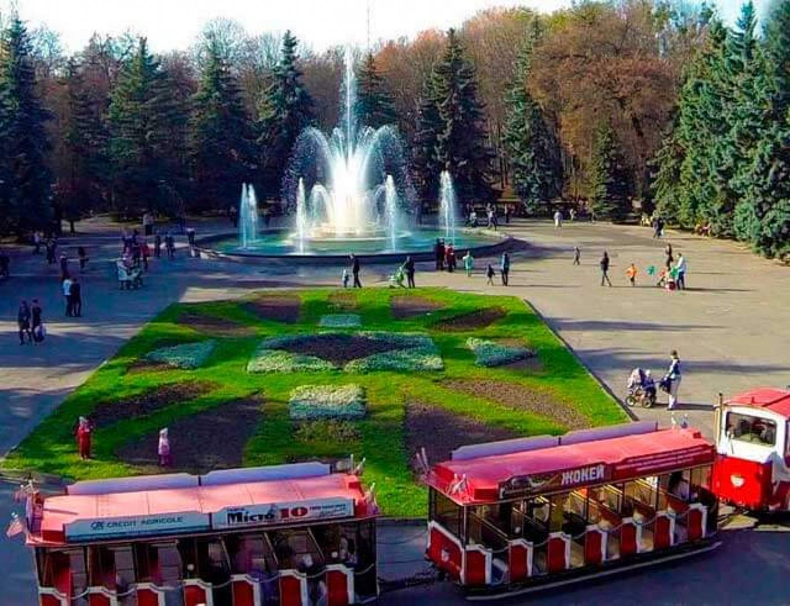
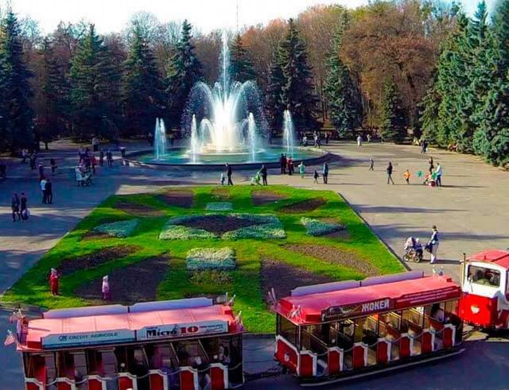

Центральний парк ім. Горького
Центральний парк ім. Горького: зелене серце Вінниці
Центральний парк ім. Горького - це не просто мальовничий куточок природи в самому серці Вінниці, а й справжня скарбниця для відпочинку та розваг. Заснований у 1936 році, він протягом багатьох років є улюбленим місцем вінничан та гостей міста.
Чим славиться парк?
- Різноманіттям зелених насаджень: на території парку ростуть понад 200 видів дерев та кущів, а також безліч квітів. Тут можна прогулятися затишними алеями, сховатися від спеки в тіні дерев або просто насолодитися свіжим повітрям.
- Атракціонами: у парку є безліч атракціонів для дітей та дорослих, від каруселей та гойдалок до екстремальних гірок.
- Розвагами: на території парку є літній театр, де проводяться концерти та вистави, а також кінотеатр, де можна подивитися фільми.
- Спортивними майданчиками: у парку є кілька спортивних майданчиків, де можна пограти у футбол, волейбол, баскетбол або просто покататися на велосипеді чи роликах.
- Водними розвагами: у парку є озеро, де можна покататися на човні або просто посидіти на березі та помилуватися мальовничими краєвидами.
- Затишними кафе: у парку є кілька кафе, де можна перекусити або просто випити кави та насолодитися атмосферою.
Центральний парк ім. Горького - це чудове місце для:
- Сімейного відпочинку: тут кожен знайде для себе розваги до душі.
- Романтичного побачення: прогулянка по мальовничих алеях парку стане незабутньою.
- Активного відпочинку: тут можна зайнятися спортом, покататися на велосипеді або просто погуляти на свіжому повітрі.
- Спокійного відпочинку: можна посидіти на березі озера, почитати книгу або просто насолодитися тишею та спокоєм.
Незалежно від того, які ваші плани, Центральний парк ім. Горького - це чудове місце, де можна добре провести час.
Ось декілька цікавих фактів про Центральний парк ім. Горького:
- Площа парку становить 40 гектарів.
- У парку встановлено пам'ятники Тарасу Шевченку, Михайлу Коцюбинському, Миколі Гоголю та іншим відомим українським діячам.
- Щороку в парку проводиться безліч фестивалів та свят, таких як День міста, День Незалежності та Масляна.
Відвідайте Центральний парк ім. Горького, і ви закохаєтеся в це мальовниче місце!


